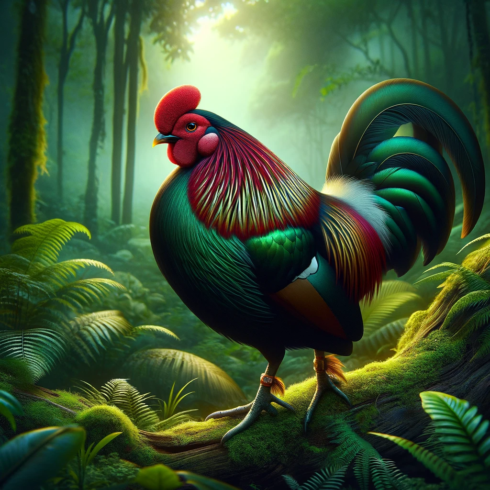

"
MORE ABOUT HORTON PLAINS
"
MORE ABOUT UDAWALAWE NATIONAL PARK

"
MORE ABOUT SINHARAJA FOREST RESERVE
| Animal Name | Interesting Facts | Image |
|---|---|---|
| Sri Lankan Elephant | One of the largest subspecies of the Asian elephant, known for their close relationship with local communities. | |
| Sri Lankan Leopard | A top predator on the island, the Sri Lankan leopard is known for its distinctive coat and elusive nature. | |
| Sri Lankan Junglefowl | The national bird of Sri Lanka, known for its vibrant colors and unique courtship displays. |  |
| Explore more about Sri Lankan Wildlife at our dedicated resources | ||